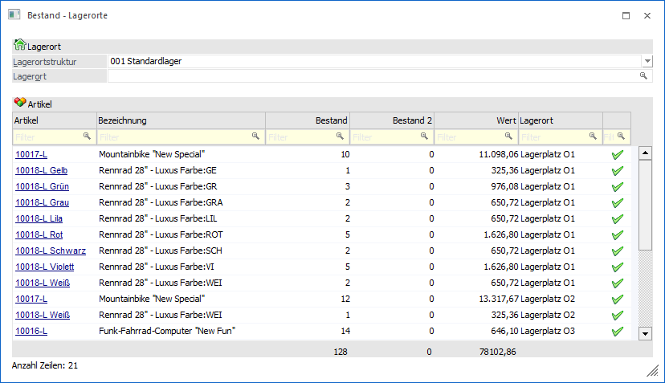
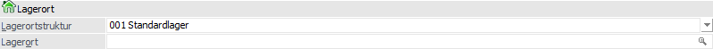
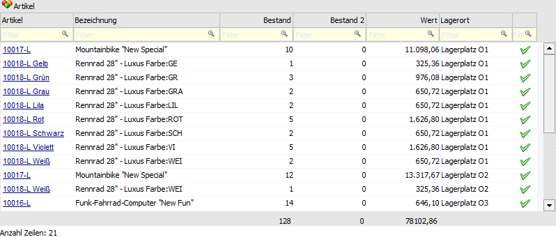
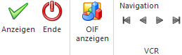

Mit Hilfe der Auswertung…
1 WinLine FAKT
1 Auswertungen
1 Lagerorte
1 Bestand - Lagerorte
… kann eine Bestandsliste nach Lagerortstruktur und Lagerort in Form einer WinLine Tabelle ausgegeben werden.

Lagerort

In dem Bereich "Lagerort" erfolgt die Selektion für die Ausgabe in der Tabelle.
Ø Lagerortstruktur
An dieser Stelle wird über die Auswahlliste eine Lagerortstruktur ausgewählt.
Ø Lagerort
In diesem Feld kann ein Lagerort, welcher in der Tabelle ausgewertet werden soll, angegeben werden. Hierbei werden auch immer die unter diesem Lagerort befindlichen Hierarchie-Ebenen bei der Ausgabe berücksichtigt.
Tabelle "Artikel"

In der Tabelle werden, gemäß zuvor getroffener Selektion, alle Lagerorte mit Bestand angezeigt.
Ø Artikel
An dieser Stelle wird die Artikelnummer des Artikels mit Bestand angezeigt.
Ø Bezeichnung
In dieser Spalte wird die Bezeichnung des Artikels dargestellt.
Ø Bestand
An dieser Stelle wird der Bestand des Lagerorts angezeigt.
Ø Bestand 2
Hier wird der Bestand 2 des Lagerorts angezeigt.
Ø Wert
In dieser Spalte wird der Wert des Lagerorts angezeigt, wobei dieser zur Laufzeit berechnet wird (Bestand x aktueller Einstandspreis).
Ø Lagerort
Hier wird der Name des Lagerorts dargestellt.
Ø verf. Bestand
In der Spalte "verf. Bestand" wird über ein Icon symbolisiert, ob der Bestand des Lagerorts verfügbar ist oder nicht.
ü  - verfügbar
- verfügbar
Der Bestand des Lagerorts
ist verfügbar.
ü - nicht verfügbar
Der Bestand des
Lagerorts ist nicht verfügbar.
Tabellenbuttons

Ø Ausgabe Excel
Durch Anwahl des Buttons "Ausgabe Excel" wird der Inhalt der Tabelle nach Microsoft Excel übergeben.
Ø Tabelleneinstellungen speichern
Die Spalten einer Tabelle können grundsätzlich an beliebige Positionen verschoben, bzw. in der Breite entsprechend angepasst werden. Durch Anwahl des Buttons "Tabelleneinstellungen speichern" werden die Einstellungen benutzerspezifisch gespeichert und bei dem nächsten Aufruf des Programmpunktes wieder vorgeschlagen.
Ø Gesamteinstellungen speichern…
Im Gegensatz zu "Tabelleneinstellungen speichern" können mit "Gesamteinstellungen speichern" mehrere Tabellenaufbauten gespeichert und nach Wunsch geladen werden. Zusätzlich werden Sonderfunktionen der Tabelle (z.B. "Spalte gruppieren") ebenfalls bei der Speicherung bedacht.
Buttons

Ø Anzeigen
Durch Anklicken des Buttons "Anzeigen bzw. der Taste F5 wird die Tabelle der Lagerorte aktualisiert.
Ø Ende
Mit Hilfe des Buttons "Ende" bzw. der Taste ESC wird das Fenster geschlossen.
Ø OIF anzeigen
Durch Anwahl des Buttons "OIF anzeigen" wird im rechten Teil des Bildschirms ein Informationsbereich eingeblendet. In diesem werden Daten zu dem Artikel angezeigt.
Ø VCR-Buttons
Über die so genannten VCR-Buttons kann durch Mausklick zwischen den Datensätzen geblättert werden. Hierbei werden automatisch nur Artikel angesprochen, welche eine Lagerortstruktur hinterlegt haben.
ü  Damit kann
der erste Datensatz angesprochen werden.
Damit kann
der erste Datensatz angesprochen werden.
ü  Damit kann
der vorherige Datensatz angesprochen werden.
Damit kann
der vorherige Datensatz angesprochen werden.
ü  Damit kann
der nächste Datensatz angesprochen werden.
Damit kann
der nächste Datensatz angesprochen werden.
ü  Damit kann
der letzte Datensatz angesprochen werden.
Damit kann
der letzte Datensatz angesprochen werden.